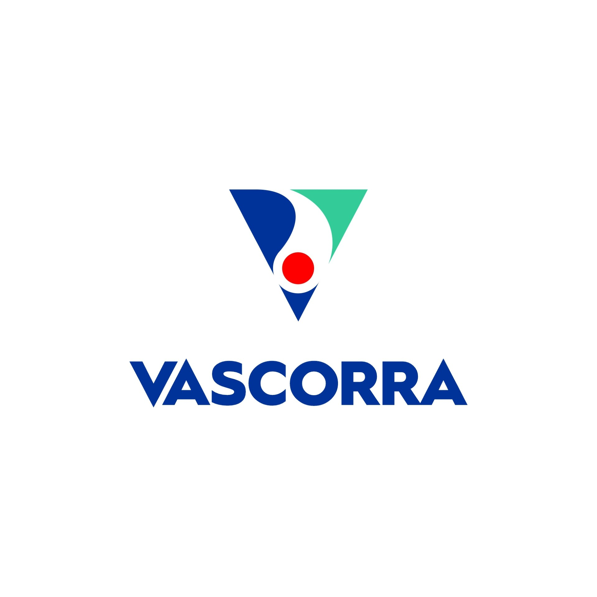
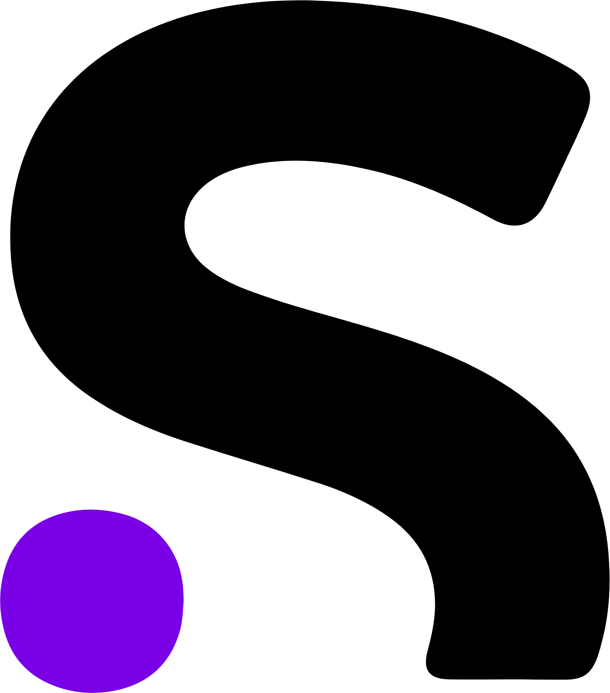

Jake Oscherwitz
I am currently an MPhil student in Andras Lakatos's lab at the University of Cambridge, and I also run marketing and business operations at Vascorra, a cardiovascular medtech company spun out of WashU.
Neuroscience is one of the next frontiers of discovery in the life sciences, and see immense potential with organoids and BCIs to model and treat neurodegeneration.
What I'm All About: Acting on Discoveries in Neurodegeneration Research
I watch my grandfather persist through Parkinson's and FTD, and his experience with limited treatment options is the foundation of my mission to bring discoveries that can treat neurodegeneration beyond the lab via enterprise.
Work Experience
-
 Vascorra Founding Team • 2025 - Present
One of the first employees at a STL-based neuroendovascular startup. I am helping establish the business from nothing and am working website development, fundraising materials, commercialization approaches, and clinical/ market research.
-
 University of Cambridge
MPhil Student • 2024 - Present
University of Cambridge
MPhil Student • 2024 - Present
Learned how to culture and experiment with cortical organoids to model neurodegeneration, and beefed up my molecular biology, transcriptomics, and proteomics skills. I spent my MPhil developing a novel pipeline for analyzing long-read seqeuncing data utilizing a new sequencing chemistry. Also examined C9orf72 in deep layer neurons and astroglia across time.
-
MaxFi Strategy & Operations Associate • 2024 - 2025
One of the first employees at a STL-based surgical simulation company. I helped them kick off social media and email marketing, organize business operations, maintained their website, and helped them raise a $2.25M seed.
-
WashU Medicine Undergrad Researcher & Research Technician • 2022 - 2024
Where I began my career in neuroscience research. I implanted wireless deep brain stimulation devices into mouse brains, immunostained for cell type-specific activation, ran behavioral tests (Von Frey, Hargreaves), and got intimate with the confocal microscope and episcope.
-
Putnam Associates Summer Associate Consultant • 2023 - 2023
Pricing and market entry strategy work for medium and large biotechs out of Boston, MA.
-
 Sanofi Research Strategy Intern • 2022 - 2022
Assisted with restructuring therapeutic area emphasis and identifying new ways to invest in promising early-stage biotechs through commercial work and a healthy amount of clinical and preclinical literature reviews.
Projects
NeuroTrack Platform - AI-powered biomarker tracking system for clinical trials.
Automated Drug Screening - High-throughput screening for neuroprotective compounds.
BrainSim Analytics - Computational models for neurodegeneration progression.
Research & Publications
Writing
-
Oligonucleotides in Neurodegeneration: The High-Stakes Race to Revolutionize CNS Therapies
The promise of anti-sense oligonucleotides for debilitating conditions like ALS and Huntington's, and what efforts are being made to bring treatments out of the lab.
-
A Neurodegeneration Tsunami Is Coming. But We're Not Helpless.
More than 150 million worldwide will have a neurodegenerative burden by 2050. $42.5B has been spent to develop 5 drugs controlling symptoms of Alzheimer's between 1995 and 2021. However, I see hope coming from AI bringing accessibility to drug screening alongside integrating physical experiments with omics and therapeutic robotics for motor disorders as evidence the foundation exists for accessible and high-quality drug development and symptom management for neurodegeneration.